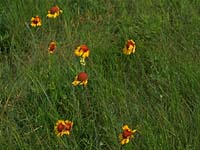

Flowers of both monocots (such as grasses) and dicots (such as mustard, flax, legumes)
generally contain both the pistil and stamens. The pistil is the female structure; the stamen,
the male structure. In many monocots, flower parts occur in 3s and multiples of 3.
In dicots, flower parts are in 4s or 5s and multiples of 4 and 5.
Flower parts include: - sepals - usually leaf-like; green, and protect the bud as the flower develops within
- petals - structures of which the size, shape and color accounts for the attractiveness to a specific pollinator. Wind-pollinated flowers may lack petals.
- pistil - lies within the center of the petals; vase-like in appearance. May be simple or compound and contains a single reproductive unit called a carpel which usually has three parts; the stigma (enlarged, sticky knob); the style (slender stalk); the ovary (an enlarged base) The ovary contains ovules (where production of megaspores occurs)
- stamen - made of 2 parts; anther (saclike container in which pollen grains develop) and the filament (slender stalk)
The Flowers of Grasses
The flowers of crops such as wheat and other cereals have specific structures not identified in the general description of a flower. An individual grass flower is called a floret and consists of the lemma and palea (modified leaves referred to as bracts) which house a branch of inflorescence in the axil of the two structures. These modified leaves collectively are called the hull. As in other flowers, a pistil and stamens are present. Three stamens occur in common cereals. Other structures, called glummes, are bracts which enclose one or more florets. A spikelet is a unit of inflorescence. Most cereals are self-pollinating or pollinated by the wind.
When do flowers develop on a plant?
Plants go through various stages of development; from germination and young seedling to a mature, flowering plant which eventually produces seeds. Flowering represents a series of events which occur within the plant. Biochemical changes take place within the plant which alter the pattern of differentiation from leaf, bud, and stem tissue to the tissues that make up the reproductive organs -- pistils and stamens -- and the accessory flower parts -- petals and sepals. The start of flowering is affected by several factors.
- day-length
- temperature
- nutrients
- stress
- age of plant
The growth response of a plant to light and dark periods is referred to as photoperiodism. It has been found that plants flower in response to the length of dark -- and that flowering can be induced in certain varieties by adjusting the time the plant is exposed to the dark. Plants may be classified as long-day, short-day or day-neutral.
Temperature has both direct and indirect effects on flowering. Certain plants will flower if exposed to lower temperatures, regardless of the length of day. Some plants flower as a result of a combination of day-length and temperature. The response of the plant to temperature is called thermoperiodism.
The amount of nutrients available influences flowering. The most significant nutrient that influences flowering is nitrogen (in combination with other factors). Plants may begin flowering due to stress, of which nutrient and moisture supply are determining factors.
Certain plants flower continuously (indeterminate) if conditions are right and some flowering habits are short-lived. A plant's age, then helps determine the flowering habit.
What are perfect and incomplete flowers?
Flowers that contain both female and male parts are termed perfect. Flowers that contain only male or female structures are called incomplete. Incomplete flowers may be either pistillate (only female structures) or staminate (only male structures). Female and male flowers may be found on the same plant. These types of plants are termed monoecious, if the flowers are found in different locations on the plant. If the incomplete flowers are found on different plants, the plants are referred to as dioecious. An example of a monoecious plant is corn and a dioecious plant is the saskatoon berry.
|